Project03 of 04
Oogway, a robotic sea turtle
A bio-mimetic underwater robot that swims with flapping fins and dives by breathing water in and out of a syringe, the way a turtle adjusts its buoyancy.
The idea01
Borrowed from a turtle.
Most small underwater robots stack thrusters. Sea turtles swim and dive with far less. We copied the animal, part for part.
- TurtleFront flippersMain source of thrust.OogwayTwo-axis front fins3D printed, each driven by two servos for roll and yaw.
- TurtleRear flippersSteering and balance.OogwayLight rear legsOne servo each, kept light to save weight.
- TurtleLungsAdjust buoyancy to rise or sink.OogwaySyringe ballastA linear actuator pulls water in to dive and pushes it out to rise.
- TurtleShellProtection with a smooth outline.OogwayFoam carapaceLight EVA foam covers that also help the robot float.
Anatomy02
Tap the robot.
Each marker opens one part of the build.
Modelled in SolidWorks and 3D printed in PLA, with a slight taper like a real flipper.
The system03
What's inside.
One sealed acrylic hull carries the brain, the power and the ballast.
Buoyancy04
Breathing to dive.
Oogway is trimmed to float slightly. Pulling water into the syringe makes it heavier than the water around it, so it sinks. Pushing the water out lets it rise. Try it.
Syringe empty: Oogway floats at the surface.
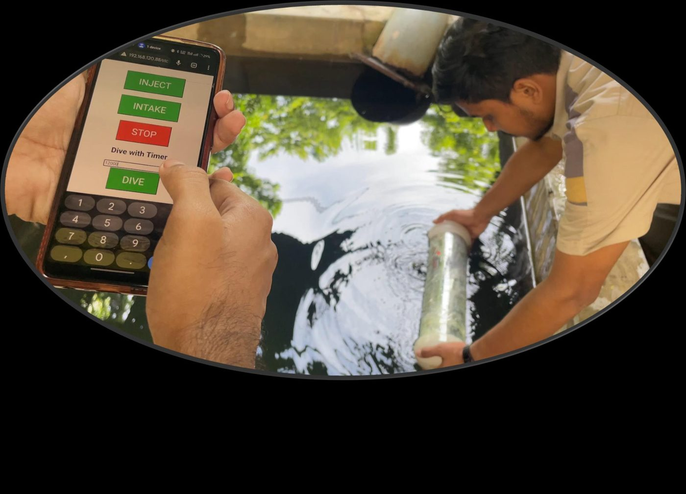
Iterations05
Three hulls, one keeper.
We proved the buoyancy system first, then built the body around it.
- Hull 1Soda bottle, phone over Wi-Fi
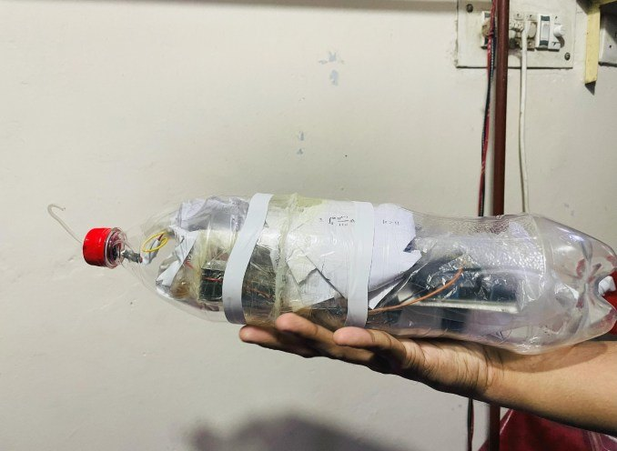
ProblemIt dived, but had no fail-safe. If the surface command dropped, the robot stayed down.
- Hull 2Five-litre water jug
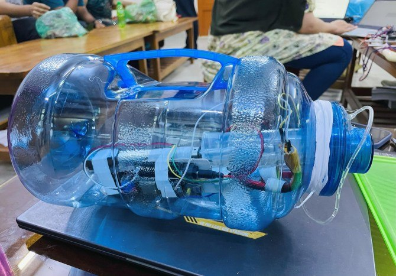
ProblemFar too buoyant. It needed about 4.5 kg of extra ballast just to sink.
- FinalAcrylic cylinder on a tether
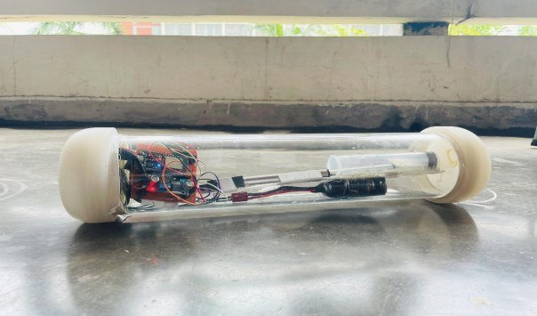
FixCompact and watertight, with a wired link so the robot can always be called back.
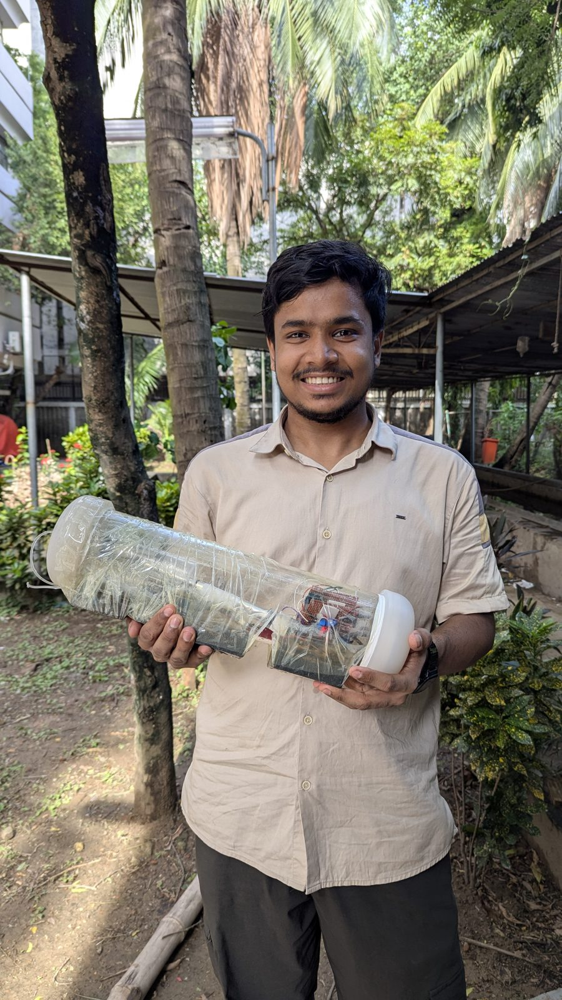
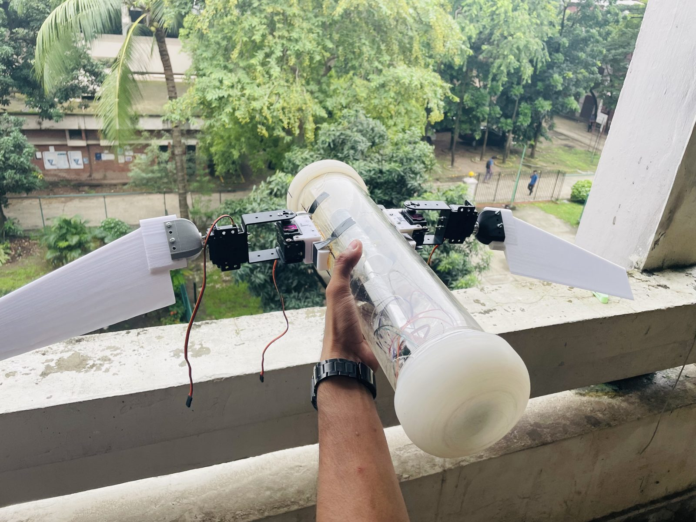
Waterproofing06
Keeping the water out.
Three places leaked. Each got its own fix.
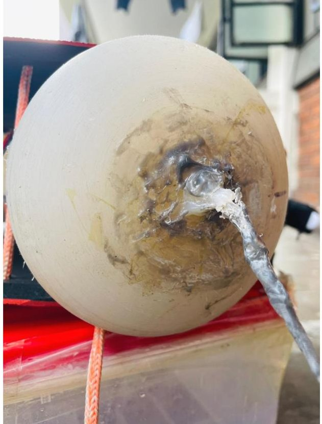
Where the tether and wires pass through the caps.
- Epoxy resin
- Hot glue
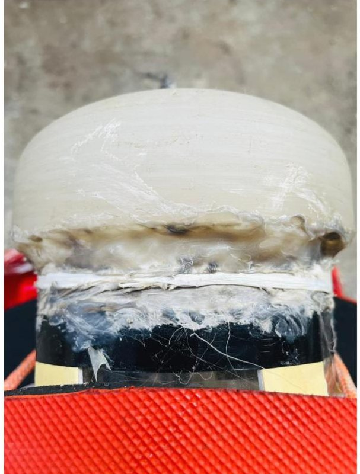
The screw joint between each cap and the hull.
- Petroleum jelly
- Nylon glue
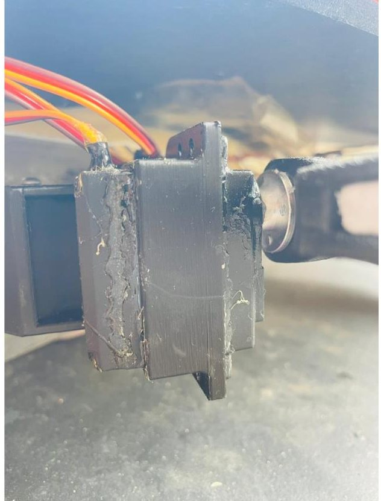
Opened, packed with petroleum jelly inside, then sealed outside.
- Petroleum jelly
- B-6000 glue
In the water07
It swims.
Tested in the reservoirs of the Institute of Water and Flood Management (IWFM), BUET.
Control08
A button for every move.
A Python interface sends simple commands down the tether. The Arduino turns each one into servo angles or actuator travel.
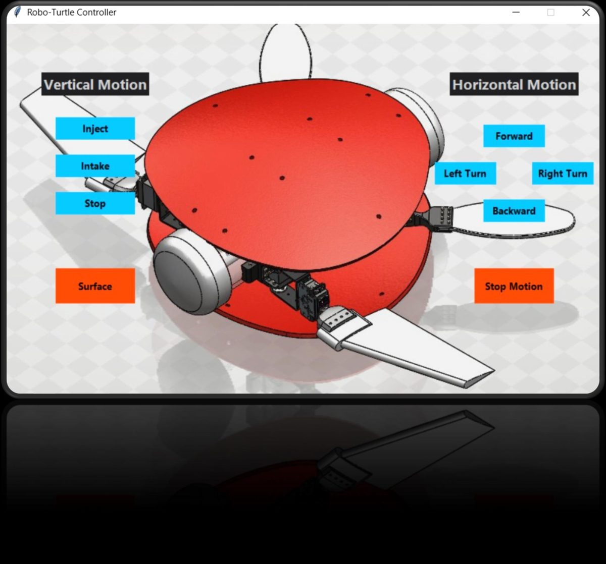
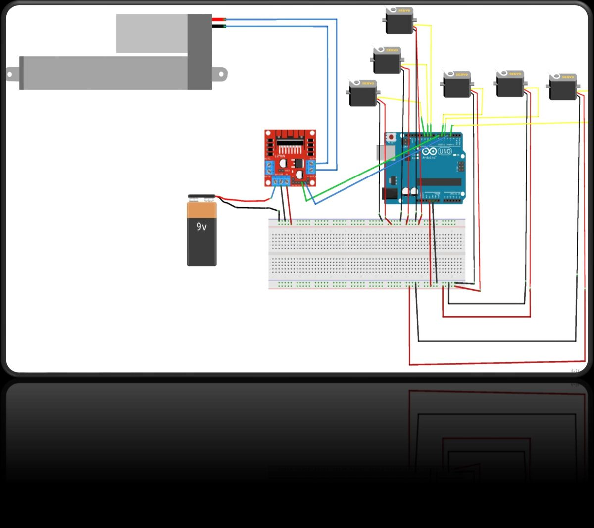
People09
My part, our team.
Team Oblivious, Group B1, ME 366. We built it together; these were my main parts.
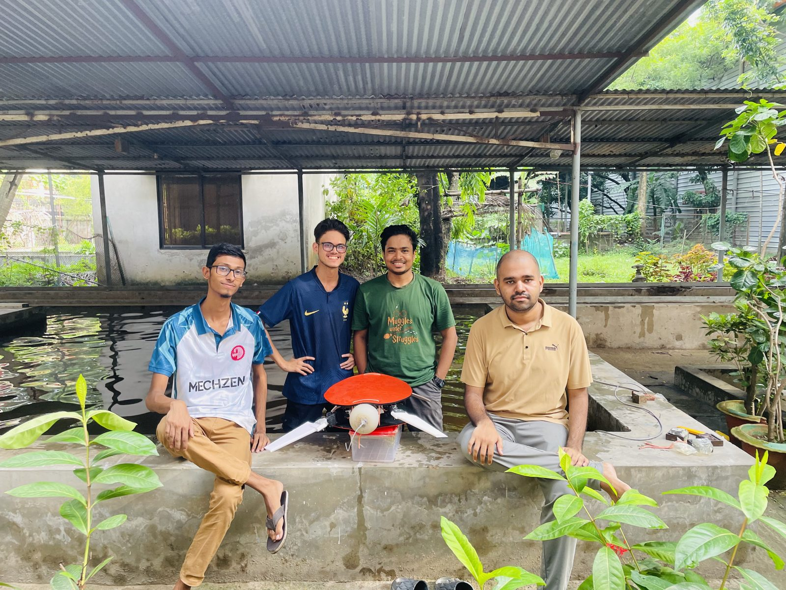
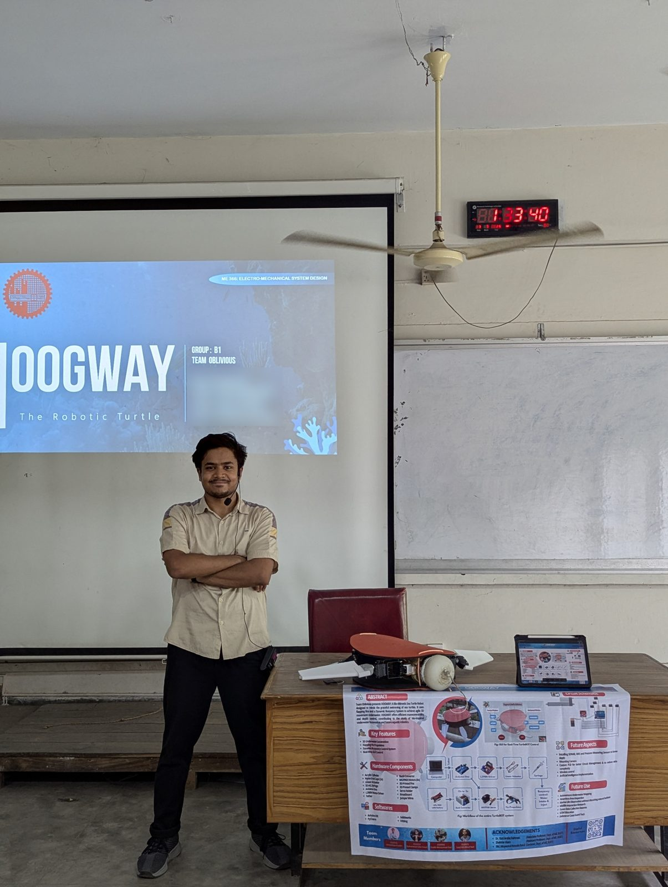
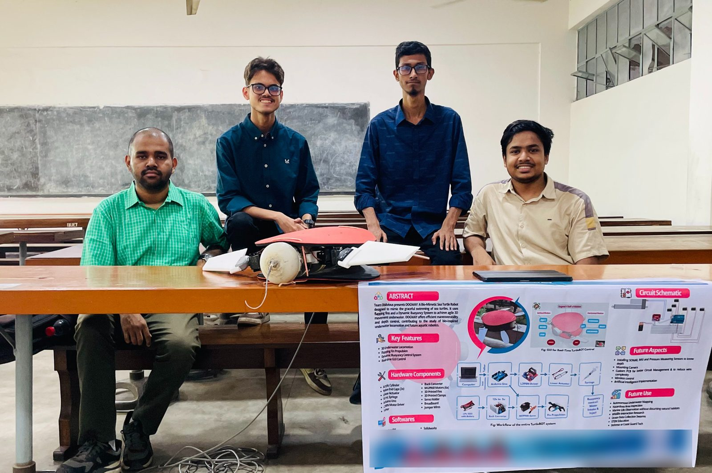
Shaikh Mohammad Oais, Syed Akil Ahnaf Nafi, Usman Gani Pranto, Mohammad Sifat Hasan
Dr. Kazi Arafat Rahman, Shahriar Alam and Md. Moyeenul Hossain Ratul, Department of Mechanical Engineering, BUET